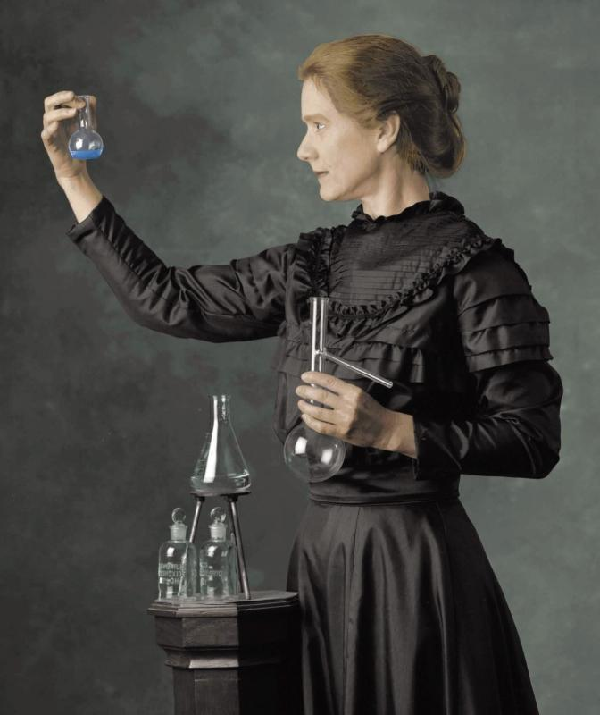
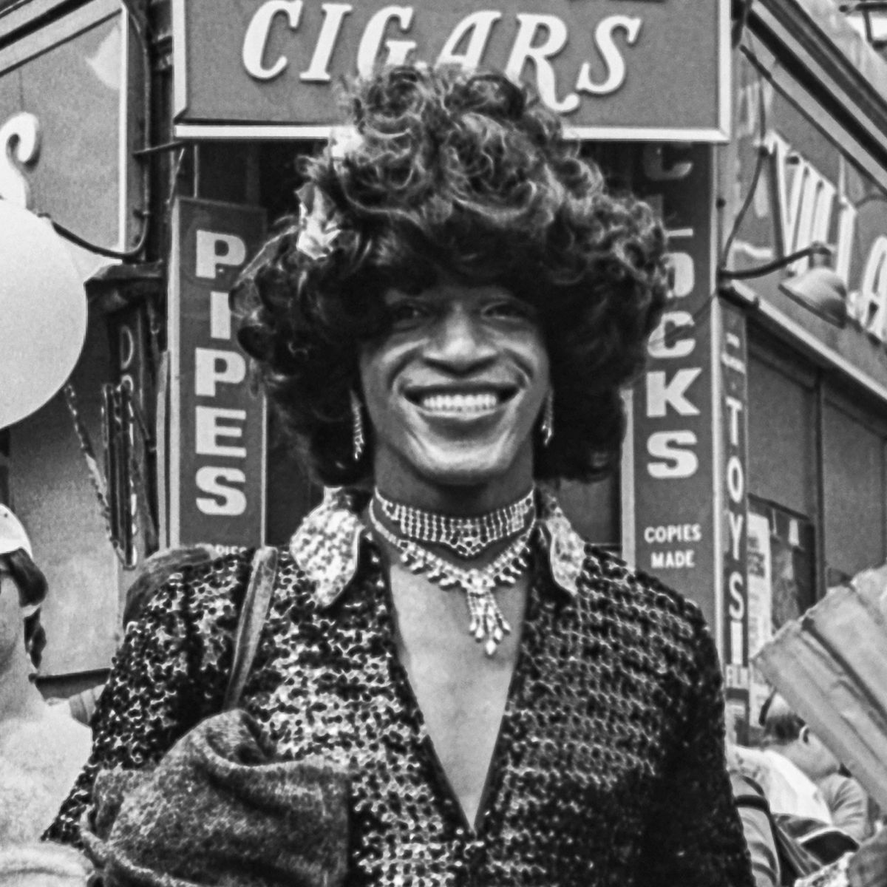

8 de Março
Dia Internacional da Mulher
Maria da Penha
Líder de movimentos de defesa dos direitos das mulheres
A Lei Maria da Penha em defesa das vítimas de violência doméstica existe hoje no Brasil muito em virtude da luta desta mulher em garantir que o seu agressor fosse condenado. Maria da Penha foi vítima de graves agressões por parte do marido que a deixaram paraplégica. Isto não a impediu de agir em busca de justiça para o seu caso e de criar movimentos em defesa de outras vítimas.
Marie Curie
Duas vezes vencedora do Prêmio Nobel de Química

Em 1898, Marie anunciou à Academia Francesa de Ciências a descoberta do rádio e do polônio (batizado em homenagem à Polônia). A descoberta dos elementos rádio e polônio renderam à Marie Curie o Nobel de Química, em 1911, o que a tornou a única pessoa no mundo com dois Nobel em áreas científicas diferentes.
Kathrine Switzer
A primeira mulher a participar de uma maratona
Kathrine Switzer desafiou as regras e se tornou a primeira mulher a correr em uma maratona no ano de 1967, em Boston, quando somente era permitido a homens participar de provas de rua nos EUA. Um dos diretores do evento tentou impedi-la de correr, mas foi bloqueado por outros competidores, tudo em frente às câmeras. Após este feito, a atleta criou a fundação 261 Fearless pela luta pela igualdade de gênero nos esportes.
Malala Yousafzai
A pessoa mais jovem a receber o Prêmio Nobel da Paz
Conhecida internacionalmente pelo seu empenho para que mulheres e crianças paquistanesas recebam educação, mesmo sendo algo contra as ordens do regime talibã. Malala Yousafzai recebeu o Prêmio Nobel da Paz quando tinha apenas 17 anos, em 2014. O seu ativismo começou muito cedo, com apenas 11 anos de idade já escrevia relatos sobre a ocupação talibã, sendo que aos 15 anos sofreu um ataque devido às suas ações ativistas.
Marsha P. Johnson
Pioneira na luta pelos direitos LGBTQIA+ no Ocidente

Ativista pelos direitos da população LGTBQIA+ e de outras minorias marginalizadas nos Estados Unidos, Marsha P. Johnson marcou a história do movimento ao lado de outras figuras emblemáticas como Sylvia Rae Rivera. Em 1969, ela se tornou um ícone para a comunidade ao participar ativamente da rebelião de Stonewall contra a repressão policial que pessoas não heteronormativas estavam sofrendo na cidade de Nova York.